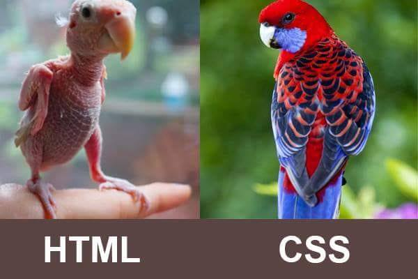

Para essa disciplina, o principal material de apoio é um canal do YouTube chamado Curso em Vídeo. Nesse canal, há várias playlists dos mais variados assuntos. Especificamente sobre essa disciplina, existe um curso de HTML5 e CSS3 com 5 módulos. Não necessariamente veremos os 5 módulos, vamos avançando até onder der.
IMPORTANTE: Esse não é um material definitivo para a disciplina. Pode ser que algumas coisas ditas lá não se aplicarão aqui, e vice-versa. Não vai mudar muita coisa, mas só deixo esse aviso para lembrar a vocês que a autoridade máxima sou eu.
Para quem gostar de estudar por livros, segue algumas recomendações:
Esse livro possui uma linguagem extremamente coloquial e frequentemente usa de alguns artifícios dinâmicos para quebrar a quinta parede e assim interagir com o leitor.
Esse é ainda mais focado em ter uma leitura leve, já que boa parte dele é no formato de história em quadrinhos. Não traz muita complexidade, mas pode ser uma boa alternativa para despertar o interesse em quem gosta desse tipo de abordagem.
Já para quem gosta de conteúdo textual, mas está procurando uma abordagem mais formal, o caminho é estudar através de sites que utilizam o formato de documentação.
O primeiro deles é o site da W3C, o órgão oficial regulador da web. É a fonte de todos os conteúdos, então será bastante completo. Porém, o conteúdo é extremamente extenso, com uma linguagem muito técnica e em uma divisão difícil de navegação. Existe também uma versão em português, mas ela não tem todos os tópicos da versão em inglês.
Por último mas não menos importante, o site W3Schools. Esse site também é em inglês, mas é EXCELENTE. Abordagem simplificada, design agradável, exemplos práticos do uso de cada tag e navegação intuitiva. Recomendo inclusive para quem não gosta de material textual, utilize esse site para consultas pontuais sobre uma determinada tag ou parâmetro. Mas muito cuidado: se vocês usarem o Google Translate para traduzir o conteúdo desse site, algumas tags serão traduzidas também. Se vocês referenciarem no código as tags traduzidas, o código do site de vocês ficará errado.
Começaremos pelas tags de configuração. A tag html cria o espaço padrão para que um conteúdo seja interpretado como um conteúdo HTML. Usaremos obrigatoriamente um parâmetro lang, que receberá a sigla do idioma do site (no nosso caso, pt-br).
Mais uma tag puramente de configuração é a meta, que serve para configurar muitas coisas diferentes. Cada configuração ficará em uma tag meta, então vamos criar uma para cada configuração ao invés de usarmos uma única tag meta como parâmetro. A primeira será para configurar o charset, que é basicamente o tipo de caracteres que o site usará (nosso padrão é o UTF-8). A segunda será para configurar a responsividade do site, e aqui é copiar e colar mesmo: . Em HTML temos algumas tags que não possuem fechamento, reparem que meta é uma delas.
Para completar as configurações, temos a tag head, title e body, que é obrigação de vocês saber o que são porque é a base da base.
Começando as tags de conteúdo de fato, a hierarquia de títulos vai do h1 ao h6. Não é permitido usar um título de hierarquia mais baixa sem que tenha ocorrências na mesma página de outros títulos de hierarquia mais alta.
Geralmente essas tags são utilizadas para divisão de seções de um artigo, por exemplo as páginas da Wikipedia. Outro uso recorrente das tags h, especificamente as h1 e h2, é em sites de notícias. É muito comum esse tipo de site ter o título de uma notícia e embaixo uma frase que aborda o tema mais importante dela.
Além das tags h, outra tag que vimos é a tag p, que cria parágrafos. O resto das tags são mais como tags de configuração e estrutura de código: html, head, title e body.
Para encaminhar os usuários a uma outra página, seja ela interna ou externa, é utilizada a tag a. A tag a possui um parâmetro obrigatório, que é o href, onde será colocado o destino desse encaminhamento.
Já para a criação de listas, conheceremos três tags: ul, ol e li. A tag ul cria um espaço para listas não-ordenadas, e a tag ol cria um espaço para listas ordenadas. Na parte interna desse espaço, ou seja, entre a tag de abertura e de fechamento, estarão tags li, que são itens de lista. Cada item de lista, ordenada ou não ordenada, deve estar entre a tag de abertura e de fechamento de uma tag li.
Reparem também que duas outras tags foram utilizadas no site, a tag strong e a tag em. A primeira é utilizada para dar destaque semântico e por padrão visual negrito a um texto, e a segunda é para sinalizar que aquele trecho deve ser lido com uma de uma maneira diferente, enfaticamente e não necessariamente sequencial ao restante do conteúdo, além de por padrão ter o visual itálico. Não usem só pelo apelo visual! Se quiserem fazer isso, isso deve ser configurado com CSS.
O terceiro tópico da nossa disciplina é referente a imagens em um site. Iniciaremos falando sobre um tipo de imagem muito específico: o favicon.
Em cada aba aberta dos navegadores, consta o nome da página (contido na tag title) e o favicon, que é um ícone que identifica o site, basicamente uma logo. Essa imagem é chamada de favicon (uma abreviação do inglês "favorite icon"), e possui algumas convenções para seu uso correto.
Por padrão (e vocês usarão o padrão na disciplina), o arquivo dessa imagem deve se chamar favicon, tudo em minúscula, e deve ter a extensão .ico. Sendo uma imagem muito pequena, vocês devem se atentar a uma outra convenção que é mais uma informação óbvia do que uma regra em si: a imagem deve ser minimalista, já que ela se apresenta de forma minúscula no navegador. Por último, vocês devem encarar essa imagem como a logo do site, e por isso não faz sentido usar vários ícones diferentes em páginas do mesmo site. Escolha uma, e coloque ela em todas as páginas.
Para escolher um favicon, vocês devem pegar uma imagem convencional e converter para .ico, e para essa tarefa eu indico esse site. Uma outra indicação, mas só para quem tiver perdido na escolha do favicon, é esse outro site em que vocês podem pesquisar imagens já quase prontas para serem utilizadas como favicon (algumas não terão a extensão .ico, então vocês devem baixá-las e convertê-las. O ícone deve ter relação direta com o assunto do site!
Para inserir o ícone no site, é utilizada a tag link, que é uma tag de configuração e é usado para inserir várias coisas num site. Acessem o código-fonte de qualquer página do meu site para terem acesso ao código correto, não faz sentido ficar decorando isso.
Agora para imagens que vão aparecer realmente como conteúdo do site, trabalharemos com a tag img e dois tipos de extensão, jpg e png. Para imagens que precisam do recurso de transparência, utilizem png, e em todos os outros casos utilizem jpg. Vocês devem configurar pelo menos dois parâmetros para essa tag: o caminho da imagem e a descrição da imagem.
